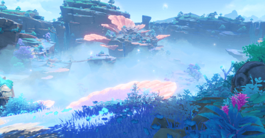

Top 10 Best Places to Visit
-
Inazuma City
Tenryou, Inazuma City
Inazuma City is located close to Chinju Forest and is surrounded by cherry blossoms. As the capital city of Inazuma, there's lots of great food to eat, including mochi and dango, and places to visit, such as:
- Yae Publishing House
- Statue of Omnipresent God
- Tenshukaku
- Aisa Bathhouse
- Komore Teahouse
-
Liyue Harbor
Feiyun Slope
Liyue Harbor, located right by Mt. Tianheng and the Sea of Clouds, offers tons of good food, shopping, and entertainment, from unique dishes at Wanmin resturant to Chinese opera performances by Yunjin. It also boasts a view of the Jade Palace in the sky, and has countless storytellers retelling history. The city is the most lively at night, especially during Lantern Rite, where thousands of lanterns can be seen floating into the sky.
-
Grand Narukami Shrine
Grand Narukami Shrine, Mt. Yougou
Located at the peak of Mt. Yougou in Inazuma, the Grand Narukami Shrine requires a hike to reach, but rewards visitors with stunning views. Close to the Yashiro Commission and Kamisato Estate, it's known for its fortune telling, shrine maidens like Yae Miko, and its peaceful atmosphere filled with foxes and sakura blossoms.
-
"People of the Springs"
Home of Hot Springs and Flowing Waters
Home of the Meztli tribe, this area is popular among toursits for its hot springs and music. Tour around with ancient-name haver Mualani, enjoy the performances, and have fun in the water by the beach.
-
Qiaoying Village
The Blossoming Warmth of Qiaoying Village
Qiaoying Village in Chenyu Vale, Liyue is known for producing high-quality tea. Visit Chunming Teaworks and try out some of their famous tea while admiring the surrounding scenery. It's also home to the Wushou dancer, Gaming.
-
Sangonomiya Shrine
The Pearlescent Palace
Sangonomiya Shrine, located on Watatsumi Island in Inazuma, offers some of the region's most stunning scenery, with soft pastel hues and unique shell-like formations. As the base of Sangonomiya Kokomi's resistance against the Vision Hunt Decree, it reflects beliefs that differ from mainland Inazuma and has a rich history tied to the Vishaps.
-
Opera Epiclese
Oratrice Mecanique d'Analyse Cardinale
The Opera Epiclese in Fontaine is very popular amont Fontainians. It mainly functions as a courthouse, but it also hosts a variety of other events, including Lyney and Lynette's magic shows. Inside is the deactivated Oratrice Mecanique d'Analyse Cardinale, which has the power to an archon or god.
-
Sumeru City
The City Where All Wisdom Resides
Sumeru City is build on top of the Divine Tree, and is widely known as the "City of Wisdom." Places to visit include The Akademiya, the Sanctuary of Surasthana, the Grand Bazaar, and Zubayr Theater, where you can watch dance performances.
-
The Mausoleum of King Deshret
The Mausoleum of King Deshret
The Mausoleum of King Deshret, located in the Hypostyle Desert in Sumeru, is filled with history. It contains the ruins of a civilization destroyed by forbidden knowledge.
-
Mondstat Cathedral
Favonius Cathedral
The Mondstat Cathedral, also known as the Favonius Cathedral, is where people go to worship the Anemo Archon. Located in Mondstat City and run by the Church of Favonius, the cathedral holds the Holy Lyre der Himmel.
Honorable Mentions
Wangshu Inn
Vigilant Guardian's Vantage Point
Located in Dihua Marsh, Liyue, the Wangshu Inn has an elevator to the top, a good resturant inside, and great views of Liyue from the top. Some say, on certain nights, adepti can be spotted staying at the inn.
Asase Shrine
Where the Provisional Head Priestess Lives
The Asase Shrine is home to the talking cat priestess, Neko, as well as many other cats that can be found around the area. Surrounded by trees and water, this peaceful area is great for cat-lovers.